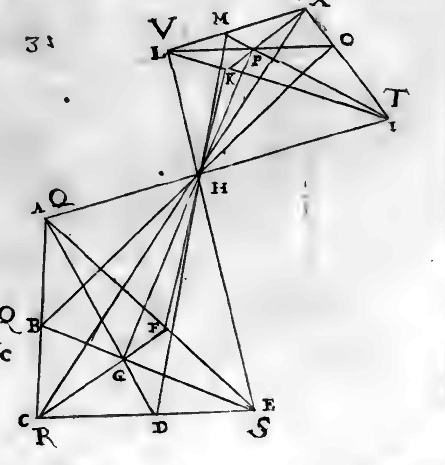

Propositio XXVI · Theorema XV¶


PROP. XXVI. THEOR. XV.
Sit pyramis, cuius vertex H, & basis triangulum AEC; productis verò planis triangulorum AHE, EHC, CHA vltra punctum H secentur haec alio plano; sintque horum planorum communes sectiones lineae AHI, CHN, EHL, NL, NI, IL; & constructa in basi propositae pyramidis figura elementi secundi AFEDCBG, iungantur lineae FH, DH, BH, quae productae occurrent lateribus oppositi trianguli; itaque occurrant in punctis deinceps K, M, O, & iungantur lineae NK, IM, LO; Dico has in eodem puncto P se inuicem secare, & insuper, si iuncta GH producatur, occurrere triangulo opposito, in praedicto puncto P. Hoc verò, vt manifestum fiat suspendemus ex angulis duorum triangulorum NLI, AEC in ratione reciproca longitudinum, pondera Q, S, R, X, V, T, quae ita sibi inuicem pulcherrimè respondebunt, vt vnum ad vnum, vel duo ad vnum, aut duo ad duo, vel tria ad tria, sint inter sese, vt sunt reciprocè longitudines ex quibus pendent.
(tab. 3. fig. 31) Fiat vt ED ad DC, ita pondus R ad S; vt AF ad FE, ita S ad Q; vt NH ad HC, ita R ad X; vt LH ad HE, ita S ad V; & vt IH ad HA, ita Q ad T; sit autem R in C, S in E, Q in A, T in I, V in L, & X in N; Quoniam igitur ED ad DC est vt R ad S, & AF ad FE, vt S ad Q, erit G centrum grauium QSR, & B centrum ipsorum QR. Et quia IH ad HA est, vt Q ad T; AB ad BC, vt R ad Q (cum B sit centrum grauium QR) & NH ad HC, vt R ad X, erit, ex quarto problemate, punctum O centrum grauium XT. Eadem ratione quia F est centrum grauitatis grauium QS, H grauium QT, & SV, erit K centrum grauium VT. Pariter cum D sit centrum grauium SR; H verò RX, & SV, erit M centrum grauium XV, & propterea iunctae lineae NK, IM, LO in eodem puncto P se inuicem secabunt, eritque illud centrum grauium XVT; est autem punctum H centrum grauium SV, RX, QT, omnium videlicet SVRXQT, & G centrum grauium QSR, (ex lem. 1.) producta igitur libra GH transibit per P centrum reliquorum grauium XVT; eritque GH ad HP, vt tria grauia XVT ad tria QSR, & sic de alijs enunciatis rationibus.